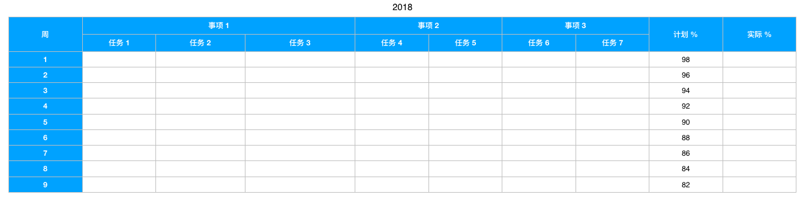
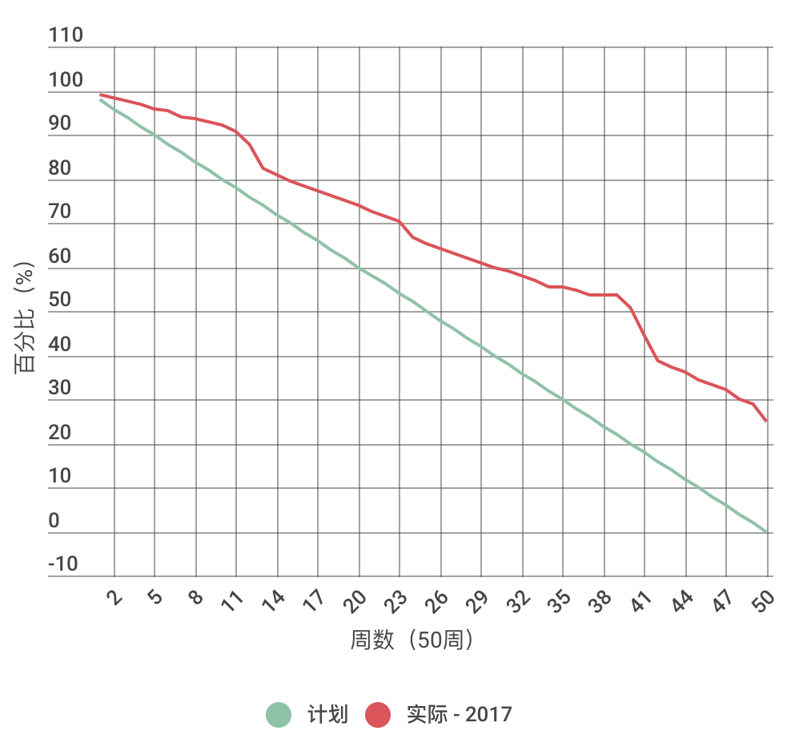

- 00 开篇词 程序行知：走在同样的路上，遇见自己的风景.md.html
- 01 初心：为什么成为一名程序员？.md.html
- 02 初惑：技术方向的选择.md.html
- 03 初程：带上一份技能地图.md.html
- 04 初感：别了校园，入了江湖.md.html
- 05 架构与实现：它们的连接与分界？.md.html
- 06 模式与框架：它们的关系与误区？.md.html
- 07 多维与视图：系统设计的思考维度与展现视图.md.html
- 08 代码与分类：工业级编程的代码分类与特征.md.html
- 09 粗放与精益：编程的两种思路与方式.md.html
- 10 炫技与克制：代码的两种味道与态度.md.html
- 11 三阶段进化：调试，编写与运行代码.md.html
- 12 Bug的空间属性：环境依赖与过敏反应.md.html
- 13 Bug的时间属性：周期特点与非规律性.md.html
- 14 Bug的反复出现：重蹈覆辙与吸取教训.md.html
- 15 根源：计划的愿景——仰望星空.md.html
- 16 方式：计划的方法——脚踏实地.md.html
- 17 检视：计划的可行——时间与承诺.md.html
- 18 评估：计划的收获——成本与收益.md.html
- 19 障碍：从计划到坚持，再到坚持不下去的时候.md.html
- 20 执行：从坚持到持续，再到形成自己的节奏.md.html
- 21 信息：过载与有效.md.html
- 22 领域：知识与体系.md.html
- 23 转化：能力与输出.md.html
- 24 并行：工作与学习.md.html
- 25 时间：塑造基石习惯（上）——感知与测量.md.html
- 26 时间：塑造基石习惯（下）——切割与构建.md.html
- 27 试试：一种“坏”习惯.md.html
- 28 提问：从技术到人生的习惯.md.html
- 29 偏好：个人习惯的局限与反思.md.html
- 30 写作：写字如编码.md.html
- 31 画图：一图胜千言.md.html
- 32 演讲：表达的技术.md.html
- 33 定义：阶梯与级别.md.html
- 34 晋升：评定与博弈.md.html
- 35 关系：学徒与导师.md.html
- 36 核心：安全与效率——工程技术的两个核心维度.md.html
- 37 过程：规模与协作——规模化的过程方法.md.html
- 38 思维：科学与系统——两类问题的两种思维解法.md.html
- 39 职业倦怠：如何面对？.md.html
- 40 局部最优：如何逃离？.md.html
- 41 沟通之痛：如何改变？.md.html
- 42 技术停滞：如何更新？.md.html
- 43 无法实现：困扰与反思.md.html
- 44 完成作品：理想与现实.md.html
- 45 代码评审：寄望与哀伤.md.html
- 46 人到中年：失业与恐惧.md.html
- 47 该不该去创业公司？.md.html
- 48 该不该接外包？.md.html
- 49 技术干货那么多，如何选？.md.html
- 50 技术分歧，如何决策？.md.html
- 51 技术债务，有意或无意的选择？.md.html
- 52 选择从众，还是唯一？.md.html
- 53 选择工作，还是生活？.md.html
- 54 侠客行：一技压身，天下行走.md.html
- 55 江湖路：刀剑相接，战场升级.md.html
- 56 御剑流：一击必杀，万剑归心.md.html
- 57 三维度：专业、展现与连接.md.html
- 58 三人行：前辈、平辈与后辈.md.html
- 59 三角色：程序员、技术主管与架构师.md.html
- 60 三视角：定位、自省与多维.md.html
- 61 工作之余，专业之外.md.html
- 62 跨越断层，突破边界.md.html
- 63 成长蓝图，进化跃迁.md.html
- 尾声 始于知，终于行.md.html
- 捐赠
16 方式：计划的方法——脚踏实地
当你内心成长的火焰被点燃，有成长的愿望，也形成了清晰的成长愿景，但却可能苦恼于不知道如何确定目标、制定计划，以达成愿景。
就拿我来说，每年结束我都会做一次全年总结，然后再做好新一年的计划，一开始这个过程确实挺艰难且漫长的，因为毕竟要想清楚一年的计划还是挺难的。但慢慢的，我开始摸索和学习到了一套制定富有成效计划的方法，成为了我成长的捷径。现借此机会我将其总结、分享给你。
目标
富有成效的计划的第一步，便是确定目标。
在设定目标这个领域，国外一位研究者马克·墨菲（Mark Murphy）曾提出过一种 HARD 方法。HARD 是 4 个英文词的首字母缩写：
- Heartfelt 衷心的，源自内心的
- Animated 活生生，有画面感的
- Required 必须的，需求明确的
- Difficult 困难的，有难度的
如其解释，这是一种强调内心愿望驱动的方法。按这个标准，一种源自内心的强烈需求在你头脑中形成很具体的画面感，其难度和挑战会让你感到既颤栗又激动，那么这也许就是一个好目标。
应用到个人身上，HARD 目标中的 H 体现了你的兴趣、偏好与心灵深处的内核。就拿写作这个事情来说吧，于我而言，兴趣只是驱动它的一种燃料，而另一种燃料是内心深处的表达欲望。写作本身不是目标，通过写作去完成一部作品才是目标，就像通过写代码去实现一个系统，它们都是作品，其驱动内核就是一种 “创造者之心”。
而 A 是你对这个目标形成的愿景是否足够清晰，在头脑中是否直接就能视觉化、具象化。就拿我个人来说，我非常喜欢读书，常在夜深人静的时候，默默潜读，掩卷而思，和作者产生一种无声的交流。这样一种画面，慢慢烙在脑海中，渐渐就激发起了想要拥有一部作品的目标。
R 则是由上一篇文章中的马斯洛需求模型层次决定的。写作一方面本是自带属于第三层次的社交属性，但另一方面更多是一种成长性的自我实现需求在激发。完成一部作品，需要明确一个主题，持续地写作，一开始我从每月写，到每周写，再到写这个专栏，作品也就渐渐成型。
而最后的 D 是其难度，决定了目标的挑战门槛。太容易的目标不值得设定，太难或离你现实太远的目标也不合适。基于现实的边界，选择舒适圈外的一两步，可能就是合适的目标。于我，从写代码到写作，其实也真就只有那么一两步的距离。
以 HARD 目标法为指导，我回顾了我工作以来的成长发展阶段，根据目标的清晰度，大概可以划分为如下三个阶段：
- 目标缺乏，随波逐流
- 目标模糊，走走停停
- 目标清晰，步履坚定
第一个阶段，属于工作的前三、四年，虽然每天都很忙，感觉也充实，一直在低头做事。但突然某一天一抬头，就迷茫了，发现不知道自己要去向哪里，原来在过去的几年里，虽然充实，但却没有形成自己明确的目标，一直在随波逐流。
在那时，人生的浪花把我推到了彼时彼地，我停在岸边，花了半年的时间重新开始思考方向。当然这样的思考依然逃不脱现实的引力，它顶多是我当时工作与生活的延伸，我知道我还会继续走在程序这条路上，但我开始问自己想要成为一个怎样的程序员，想要在什么行业，什么公司，写怎样的程序。就这样，渐渐确立了一个模糊的目标。
重新上路，比之前好了不少，虽然当时定的目标不够清晰，但至少有了大致方向，一路也越走越清晰。从模糊到清晰的过程中，难免走走停停，但停下迷茫与徘徊的时间相对以前要少了很多，模糊的目标就像一张绘画的草图，逐渐变得清晰、丰富、立体起来。当目标变得越来越清晰时，步履自然也就变得越发坚定。
回顾目标在我身上形成的经历，我在想即使当时我想一开始就要去定一个目标，想必也不可能和如今的想法完全一致。毕竟当时受限于眼界和视野，思维与认知也颇多局限，所立的目标可能也高明不到哪里去；但有了目标，就有了方向去迭代与进化，让我更快地摆脱了一些人生路上的漩涡。
假如，你觉得现状不好，无法基于现状延伸出目标。那么也许可以试试这样想：假如我不做现在的事情，那么你最想做的是什么？通常你当前最想做的可能并不能解决你的谋生问题，那么在这两者之间的鸿沟，如何去搭建一条桥梁，可能就是一个值得考虑的目标。
我们为什么要立 HARD 目标？有一句话是这么说的：
Easy choices, hard life. Hard choices, easy life.
容易的选择，艰难的生活；艰难的选择，轻松的生活。
方法
目标是愿望层面的，计划是执行层面的，而计划的方式也有不同的认识维度。
从时间维度，可以拟定 “短、中、长” 三阶段的计划：
- 短期：拟定一年内的几个主要事项、行动周期和检查标准。
- 中期：近 2～3 年内的规划，对一年内不足以取得最终成果的事项，可以分成每年的阶段性结果。
- 长期：我的长期一般也就在 5～7 年周期，属于我的 “一辈子” 的概念范围了，而 “一辈子” 当有一个愿景。
短期一年可以完成几件事或任务，中期两三年可以掌握精熟一门技能，长期的 “一辈子” 达成一个愿景，实现一个成长的里程碑。
从路径维度，订计划可以用一种 SMART 方法，该方法是百年老店通用电气创造的。在 20 世纪 40 年代的时候，通用电气就要求每一个员工把自己的年度目标、实现方法及标准写信告诉自己的上级。上级也会根据这个年度目标来考核员工。这种方法进化到了 20 世纪 80 年代，就成了著名的SMART原则。
SMART 也是 5 个英文词的首字母缩写：
- Specific 具体的
- Measurable 可衡量的
- Achievable 可实现的
- Relevant 相关的
- Time-bound 有时限的
今天 SMART 已经非常流行和常见，我就不解释其具体含义了，而是讲讲我如何通过 SMART 来跟踪个人年度计划执行的。按 SMART 方式定义的计划执行起来都是可以量化跟踪的，我通常用如下格式的一张表来跟踪：

计划跟踪表示意图
其实，一年值得放进这张表的就那么几件事，每件事又可以分解为具体的几个可量化的任务，再分解到一年 50 周，就可以很明显地看出理想计划和现实路径的曲线对比。如下，是我 2017 年的一张计划与实际执行的对比曲线图：

计划与实际执行对比示意图
按 SMART 原则方法使用计划跟踪表的优点是：简单、直接、清晰。但缺点也明显：即使百分百完成了所有的计划，也都是预期内的，会缺乏一些惊喜感。而因为制定目标和计划会有意识地选择有一定难度的来挑战，所以实际还很难达成百分百。
说到目标的难度与挑战，使用 SMART 方法最值得注意的点就是关于目标的设定和方法的选择。鉴于人性和现实的因素，制定计划时很可能是这样一种情况：基于现实掌握的方法，考虑计划的可达性。这样制定出来的计划看起来靠谱，但却失去了真正挑战与创新的可能。
通用电气传奇 CEO 杰克·韦尔奇执掌时期，有一个飞机引擎工厂制定了一个减少 25% 产品缺陷的目标。韦尔奇当时就觉得这个 SMART 目标很普通，没什么挑战，但工厂负责人却觉得已经很有难度了。韦尔奇执意坚持，把目标提高到了减少 70% 的缺陷，工厂负责人一开始很焦虑，认为这根本不可能完成。
没办法，标准是韦尔奇定的，改不了。工厂负责人知道按以前的方法根本达不成，只好去寻找新方法。在寻找的过程中，他们发现，要想如此大幅度地减少缺陷，不能只靠质检人员，而是必须让每名员工都有质检意识。
于是，工厂开始大规模进行培训；同时，工厂开始有意识招聘综合素质更高的技术工人。为了吸引并留住这些工人，工厂必须改变以前的管理方式，给他们更多的自主权，因为这些工人普遍受过很好的教育，而且很容易找到工作。最后，一个拔高的目标计划改变了整个工厂的培训、招聘和运行方式。
SMART 计划，正如其名，需要聪明且智慧地设定并使用它。
有时你可能会觉得计划没有变化快，或者计划好的人生，过起来好机械，没劲。其实计划是准备，变化才是永恒，而计划就是为了应对变化。为此，我经常会把计划表按优先级排得满满的，但我永远只做那些计划表顶部最让自己感到 HARD 的事情。
变化来了，就把它装进计划表中，看这样的变化会排在哪个位置，和之前计划表前列的事情相比又如何。如果变化的事总能排在顶上，那么说明你的人生实际就在不断变得更精彩，做的事情也会让你更激动。而如果变化老是那些并不重要却还总是紧急的事情，老打断当下的计划，那么也许你就要重新审视下你当前的环境和自身的问题了。
这样，计划表就成了变化表，人生无法机械执行，只有准备应对。
最后，找到属于你的 HARD 目标，开始有计划且 SMART 的每一天；这样的每一天，走的每一步也许会更重些、累些，但留下的脚印却很深、很长。
© 2019 - 2023 Liangliang Lee. Powered by gin and hexo-theme-book.